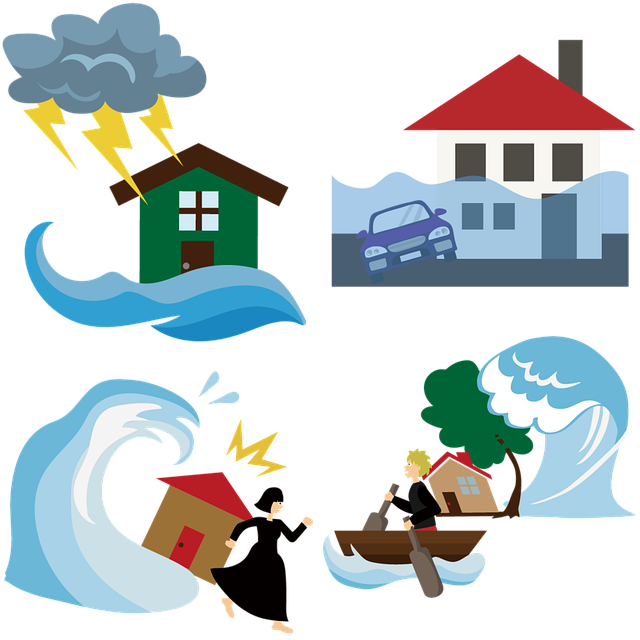

Tsunami

A tsunami is a series of large ocean waves caused by sudden movements on the seafloor. These movements are often triggered by events like underwater earthquakes, volcanic eruptions, or landslides. When the seafloor shifts, it displaces a large amount of water, creating waves that can travel across the ocean at high speeds.
Causes of Tsunamis:
- Underwater Earthquakes: The most common cause of tsunamis. When the Earth's tectonic plates shift, it can cause the seafloor to move up or down, pushing water and creating a tsunami.
- Volcanic Eruptions: Explosive eruptions or the collapse of a volcano into the sea can displace water and generate tsunamis.
- Landslides: Large amounts of rock and earth sliding into the ocean, either from a coastal cliff or an underwater slope, can cause tsunamis.
- Meteorite Impacts: Though rare, a meteorite hitting the ocean could create a tsunami.
Tsunami Preparedness and Response:
- Early Warning Systems: Many regions at risk of tsunamis have systems in place to detect underwater earthquakes and issue warnings. These systems can give people time to evacuate to higher ground.
- Evacuation Plans: Coastal communities often have evacuation routes and plans to help people reach safety quickly in the event of a tsunami.
- Public Education: Educating people about the signs of a tsunami, such as an unusual rapid withdrawal of water from the shore, can help save lives.
- Building Restrictions: Some areas at high risk of tsunamis have restrictions on building to reduce the potential for loss of life and property.
Tsunamis are powerful and dangerous natural events, but with awareness and preparation, their impact can be reduced, and lives can be saved.